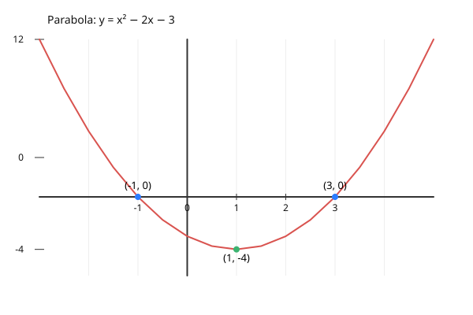

Gyökvonás
- $\sqrt{9} = 3$, mert $3^{2} = 9$
- $\sqrt{16} = 4$, mert $4^{2} = 16$
Páros gyökvonásnál kikötés kell:
$K: a \ge 0 \implies (\sqrt[n]{a})^{n} = a$
Páratlan gyökvonásnál nem kell kikötés:
$(\sqrt[3]{a})^{3} = a$
Általános alakja:
$\sqrt[n]{a} = b$, ha $b^{n} = a$
- $a$ = alap (gyök alatti szám)
- $n$ = gyök fokszáma (ha nincs kiírva, $n = 2$)
- $b$ = gyökérték
Műveletek gyökökkel
Szorzat vagy osztás esetén a gyök szétbontható:
$$\sqrt[n]{a \cdot b} = \sqrt[n]{a} \cdot \sqrt[n]{b}$$
Példák:
- $\sqrt[3]{8x^{3}} = \sqrt[3]{8} \cdot \sqrt[3]{x^{3}} = 2x$
- $\sqrt[4]{16a^{4} \cdot b^{8}} = 2ab^{2}$
- $\sqrt[5]{\frac{32a^{10}}{b^{5}}} = \frac{2a^{2}}{b}$
VIGYÁZAT! Összeadásnál és kivonásnál nem bontható szét:
$\sqrt[n]{a \pm b} \neq \sqrt[n]{a} \pm \sqrt[n]{b}$
Példa: $\sqrt{9+16} = 5$, de $\sqrt{9}+\sqrt{16} = 7$. A gyökvonás nem disztributív az összeadásra.
Algebrai gyökvonás
A gyök felírható törtkitevős hatványként is:
$$\sqrt[n]{a^{m}} = a^{\frac{m}{n}}$$
Példa: $\sqrt[5]{b^{3}} = b^{\frac{3}{5}}$
- $p$ (számláló) = hatványkitevő
- $q$ (nevező) = gyök fokszáma
Kiemelés a gyökjel alól
Példa: $\sqrt[4]{32}+\sqrt[4]{162}$
- Feltörés: $\sqrt[4]{16 \cdot 2} + \sqrt[4]{81 \cdot 2}$
- Szétbontás: $\sqrt[4]{16} \cdot \sqrt[4]{2} + \sqrt[4]{81} \cdot \sqrt[4]{2}$
- Egyszerűsítés: $2\sqrt[4]{2} + 3\sqrt[4]{2}$
- Összevonás: $5\sqrt[4]{2}$
Másodfokú egyenlet három alakja
1. Általános alak
$$ax^{2} + bx + c = 0$$
Példa: $x^{2} - 2x - 3 = 0 \implies x_1 = 3, x_2 = -1$
Megoldás a megoldóképlettel: $x_{1,2} = \frac{-b \pm \sqrt{b^{2} - 4ac}}{2a}$
2. Szorzat alak (Gyöktényezős alak)
$$a(x-x_1)(x-x_2) = 0$$
Példa: $(x-3)(x+1) = 0$
Ez az alak közvetlenül megmutatja a zérushelyeket ($3$ és $-1$).
3. Teljes négyzet alak
$$a(x-u)^{2} + v = 0$$
Példa: $(x-1)^{2} - 4 = 0$
Ez az alak a parabola csúcspontját adja meg: $C(1; -4)$.
